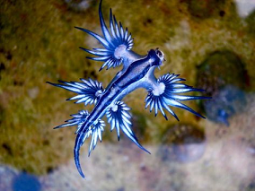

-
해수관상생물연구
아쿠아리움의 해양생물의 사육기술, 건강관리 및 질병제어기술 등을 연구합니다
(1) 해수어, 갑각류, 연체류 등 해수관상생물이 아쿠아리움 내에서 건강하게 서식할 수 있도록 영양조절,질병예방, 질병제어기술을 연구합니다.
(2) 또한 아직까지 밝혀지지 않은 많은 해양생물의 생리, 생태연구를 통하여 사육기술의 향상과 번식연구에 기초적인 정보를 제공함으로써 해양생태계의 종보존과 유지에 기여합니다. -
동물번식연구
바다표범, 펭귄, 수달 등의 해양포유류 및 조류의 개체관리,서식지 환경 조성 등을 통한 번식연구를 합니다(1) 종의 생존에 있어서 번식은 필수적입니다. 환경오염과 기후변화 그리고 인간의 이기심에 의한 남획으로 동물들은 번식을 위한 생태환경을 잃어가고 배우자를 만나는 기회 또한 줄게 되었습니다.
(2) 바다표범, 펭귄, 수달 등의 해양포유류 및 조류의 개체관리, 이들의 서식지 환경 조성 등을 통한 번식 연구로 종 다양성과 보존에 기여하며, CITES(멸종위기에 처한 야생동∙식물종의 국제거래에 관한 협약)에 등록된 동물의 보호에도 힘쓰고 있습니다. -
LSS 연구
한정된 공간에서 살고 있는 전시 생물들의 쾌적한 환경을 위해 Life Support System(LSS)을 연구합니다.
(1) LSS(Life Support System)는 생물이 살기에 적합한 환경을 조성하는데 필요한 설비 등을 말합니다.
(2) 자연환경이 아닌 인공적인 사육환경에서의 동물들의 복지를 위하여 최대한 자연과 유사한 환경을 제공하고자 노력하고 있습니다.
(3) 여과시스템 개선을 통한 사육수 관리, 냉각기 및 열교환기 등을 통한 온도조절, 자연과 유사한 광주기와 조도를 제공하기 위한 조명 등을 연구합니다.
아쿠아리스트 수행연구
아쿠아플라넷의 아쿠아리스트는 전시 생물의 복지와 보전을 위한 다양한 연구를 수행하고 있습니다.
해마다 팀별, 또는 개인별 연구 주제를 선정하고 연구를 통하여 전시생물의 복지와 보전을 실현하기 위해
노력하고 있습니다.
이에 더하여 2013년도부터 국가기관이 발주한 해양생물의 보전연구 용역을 수행하며
국내 서식중인 보호대상해양생물의 종 보전 역할을 수행하고 있습니다.
| 연도 | 주제 | 아쿠아리스트 |
|---|---|---|
| 2018 | 2018 서식지외보전기관 지원사업 | 아쿠아플라넷 제주 / 여수 / 63 |
| 2018 | 제주AQ 대형 가오리 종별 기생충 범람시기 기준화를 통한 대형 | 아쿠아플라넷 여수 / 김태일, 최환준 |
| 2018 | 더 정글 폭포전시장 식물 원예를 통한 전시효과 증대 | 아쿠아플라넷 제주 / 여수 / 63 |
| 2018 | 블로치드팬테일레이의 출산 후 자어의 사육 안정화 기술 확립 | 아쿠아플라넷 여수 / 김태일, 최환준 |
| 2018 | 제주AQ 대형 가오리 종별 기생충 범람시기 기준화를 통한 대형 | 아쿠아플라넷 제주 / 여수 / 63 |
| 2018 | 블로치드팬테일레이의 출산 후 자어의 사육 안정화 기술 확립 | 아쿠아플라넷 제주 / 여수 / 63 |